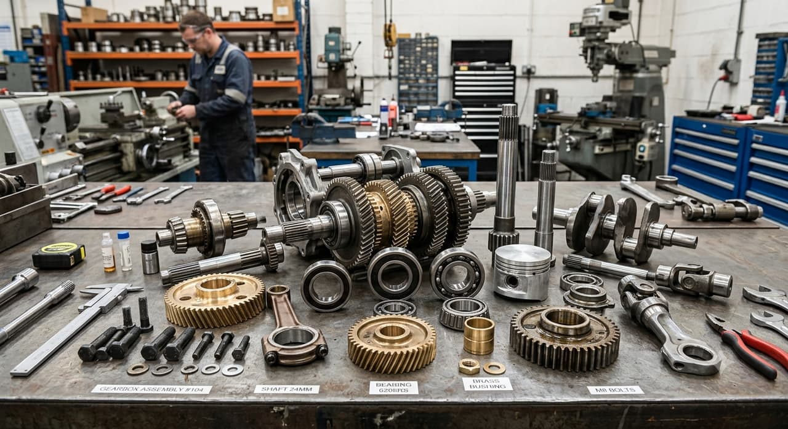

Transmission & Composants Mécaniques
Transmission de puissance & composants mécaniques
Roulements, courroies, chaînes, accouplements, réducteurs, moteurs et composants mécaniques pour les machines tournantes.

Aucune référence ne correspond à votre recherche. Décrivez-nous l’article directement : nous l’identifions.
Roulements
Notre gamme de roulements couvre les types à billes, à rouleaux, de butée, de précision et spécialisés pour charges rotatives sur moteurs, convoyeurs, pompes et machines industrielles.
- Deep Groove Ball Bearing
- Angular Contact Bearing
- Spherical Roller Bearing
- Tapered Roller Bearing
- Cylindrical Roller Bearing
- Needle Roller Bearing
- Self-Aligning Ball Bearing
- Thrust Ball Bearing
- Thrust Roller Bearing
- Ceramic Hybrid Bearing
- Stainless Steel Bearing
- Insert Bearing
- Crossed Roller Bearing
- Miniature Ball Bearing
- Thin-Section Bearing
- Precision Roller Bearing
- Cam Follower Bearing
- Track Roller Bearing
- Needle Thrust Bearing
- Magnetic Bearing
- Air Bearing
- Plastic/Polymer Bearing
- Insulated Bearing
- Split Roller Bearing
- Slewing Bearing
- Turntable Bearing
- Clutch Bearing (One-Way / Sprag)
- Wheel Hub Bearing
- Conveyor Bearing
Paliers
Paliers montés prêts à fixer sur bâtis et structures, disponibles en configurations pillow block, à bride, tendeur, cartouche, suspendu et thermoplastique.
- Pillow Block Bearing Unit
- Flanged Bearing Unit
- Take-Up Bearing Unit
- Cartridge Bearing Unit
- Hanger Bearing Unit
- Thermoplastic Bearing Unit
Accessoires & Joints
Logements, joints, bagues et éléments de blocage qui protègent les roulements de la contamination et maintiennent les ensembles solidement retenus.
- Bearing Housing
- Bearing Seal
- Retaining Ring
- Lock Nut
- Lock Washer
- Thrust Washer Assembly
Composants de Mouvement Linéaire
Composants de précision pour le mouvement rectiligne — arbres, rails de guidage, chariots, vis à billes et trapézoïdales — conçus pour un positionnement répétable à faible friction.
- Linear Ball Bearing
- Linear Shaft
- Guide Rail
- Ball Screw
- Lead Screw
- Linear Roller Bearing
- Linear Plain Bearing
- Linear Shaft Support
- Linear Guide Block / Carriage
- Ball Nut
- Lead Nut
- Linear Actuator
Arbres, accouplements & verrouillage
Transmission du couple entre arbres, y compris les éléments de calage et de verrouillage.
- Shaft Collar
- Shaft Coupling
- Keyed Shaft
- Splined Shaft
- Shaft Extension
- Coupling (Jaw)
- Coupling (Gear)
- Coupling (Grid)
- Coupling (Flexible)
- Coupling (Rigid)
- Universal Joint
- Shaft
- Shaft Hub
- Key & Keyway
- Locking Assembly
- Taper Lock Bush
- Bearing Housing
Courroies
Courroies trapézoïdales, crantées, poly-V, plates et de convoyage pour une transmission de puissance flexible et silencieuse entre poulies.
- V-Belt
- Timing Belt
- Poly-V Belt
- Flat Belt
- Conveyor Belt
Poulies
Poulies crantées, en V et plates, ainsi que galets tendeurs et guides qui maintiennent les entraînements à courroie alignés et correctement tendus.
- Timing Pulley
- V-Pulley
- Flat Pulley
- Idler Pulley
- Belt Guide
- Tensioner
Chaînes & Pignons
Chaînes à rouleaux, renforcées, à maillons et silencieuses avec pignons et guides associés pour une transmission synchronisée et robuste.
- Chain (Roller Chain)
- Heavy-Duty Chain
- Leaf Chain
- Silent Chain
- Sprocket
- Idler Sprocket
- Chain Guide
Réducteurs & Trains d'Engrenages
Réducteurs hélicoïdaux, à vis sans fin, coniques et planétaires ainsi que trains d’engrenages et variateurs qui adaptent vitesse et couple à la charge.
- Gearbox (Helical)
- Gearbox (Worm)
- Gearbox (Bevel)
- Gearbox (Planetary)
- Speed Reducer
- Speed Variator
- Gear Set (Spur)
- Gear Set (Helical)
- Gear Set (Bevel)
- Gear Set (Worm)
- Rack & Pinion
Embrayages, Freins & Limiteurs de Couple
Embrayages, freins et limiteurs de couple qui gèrent l’engagement, l’arrêt et la protection contre les surcharges dans les chaînes cinématiques.
- Torque Limiter
- Clutch (Mechanical)
- Brake (Mechanical)
Applications
Où ces composants interviennent
- Convoyeurs, concasseurs, broyeurs et cribles
- Pompes, ventilateurs et compresseurs
- Groupes motoréducteurs et entraînements industriels
- Maintenance préventive et remise en état de machines
- Ateliers de fabrication et lignes de production
Sourcing technique
Vous n’avez pas besoin de la référence exacte
Vous n’avez pas toujours besoin de connaître la référence exacte. SUJO peut analyser une plaque signalétique, une photo, un plan, une fiche technique ou un composant existant afin d’identifier la bonne pièce, de vérifier la compatibilité et de proposer des solutions OEM, équivalentes ou alternatives selon les exigences du projet.
Demander un devis
Ce qu’il nous faut pour chiffrer
Tout ce que vous avez suffit pour commencer. S’il vous manque un élément, envoyez le reste : nous complétons par la recherche technique.
- Référence fabricant ou numéro de pièce
- Photo de la pièce ou de la plaque signalétique
- Marque et modèle de l’équipement
- Quantité requise
- Dimensions, pression, débit, tension ou spécifications pertinentes
- Lieu de livraison et délai souhaité